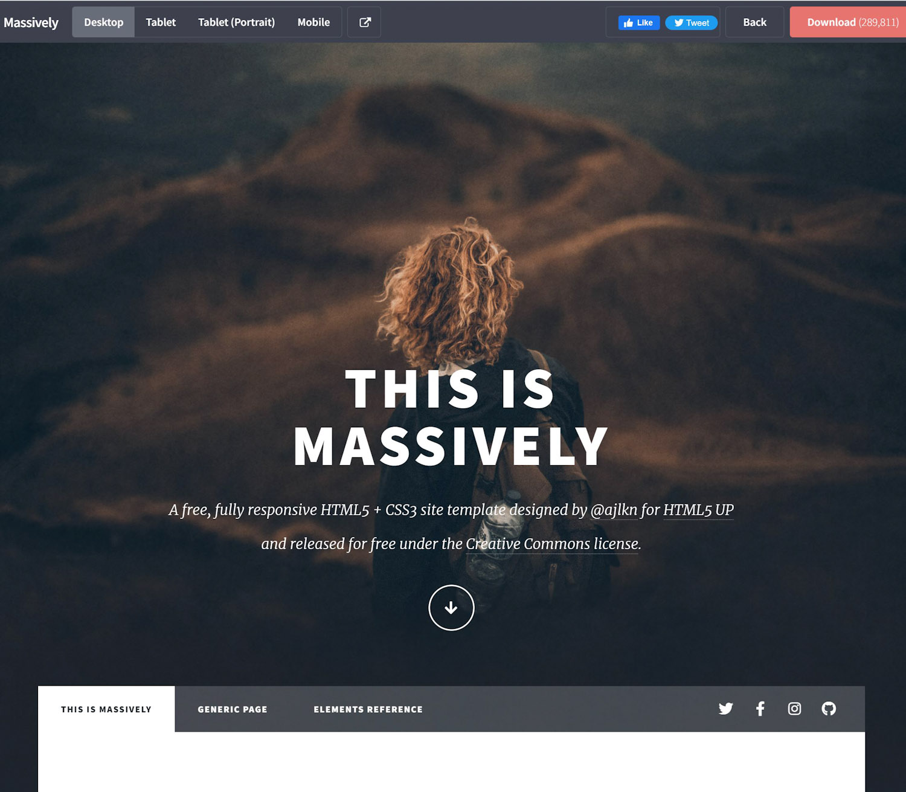
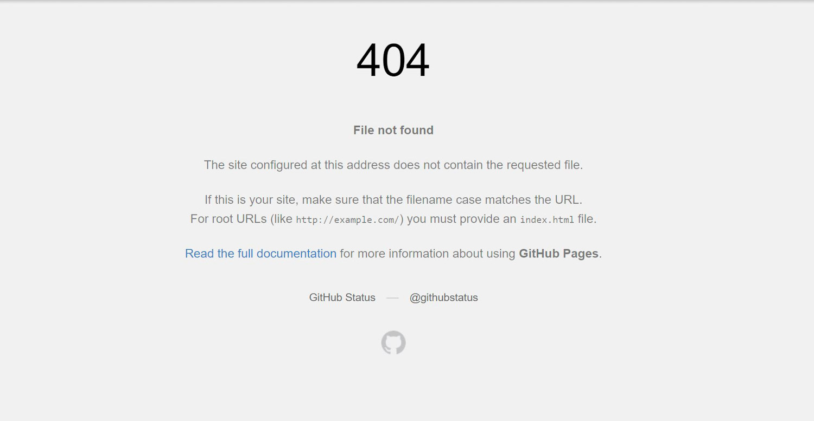
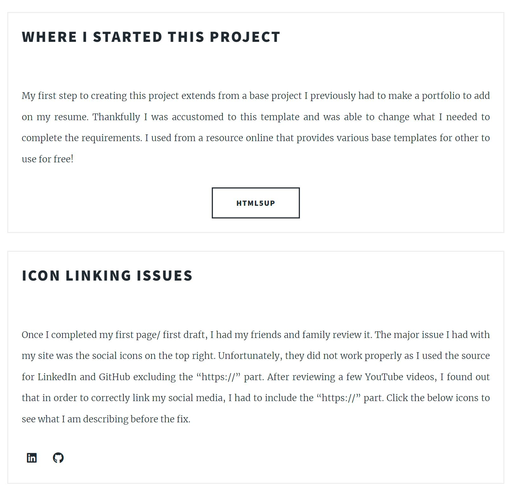

Revisions

Revisions
My first step to creating this project extends from a base project I previously had to make a portfolio to add on my resume. Thankfully I was accustomed to this template and was able to change what I needed to complete the requirements. I used a resource online that provides various base templates for others to use for free called HTML5UP!
Icon linking issues
Once I completed my first page/ first draft, I had my friends and family review it. The major issue I had with my site was the social icons on the top right. Unfortunately, they did not work properly as I used the source for LinkedIn and GitHub excluding the “https://” part. After reviewing a few YouTube videos, I found out that in order to correctly link my social media, I had to include the “https://” part. Click the below icons to see what I am describing before the fix.
What I learned most from this project
After I uploaded all the images I had previously, I tried to attach new screenshots of before and after for fixing both the base website, as well as the icons, yet I was unsuccessful. I could not figure out why GitHub pages accepted all of my other pictures perfectly, but none of my screenshots worked for this page. Unfortunately, the internet had various reasons on why GitHub pages would not accept my screenshots / pictures so unfortunately, I had to improvise and link the site I used, as well as link the error for the icons. After having a mental break down for about 30 minutes (just kidding!), I was able to reach out to my dad for help since my live server showed the images correctly, yet when I ran the site through GitHub pages, it would not be there. The issue was that the file name for my images previously used all had “pic#.jpg”. The new files I had for this revision page had an upper case “pic#.JPG” file name… Overall, this was a great experience to start getting more experience with web development.